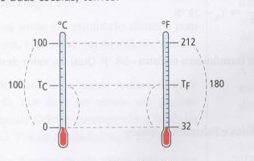
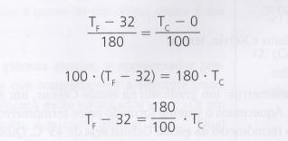
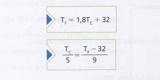

Ao longo do tempo, várias escalas termométricas surgiram em busca da calibração dos termômetros, para a facilitação de estudos, foi definido que só seriam adotadas escalas aceitas pela comunidade científica internacional.
Criada pelo físico sueco Andres Celsius, é adotada na maioria dos países, nessa escala o ponto do gelo corresponde ao zero grau (0ºC), e o ponto de vapor da água corresponde a 100 graus(100ºC), à pressão de 1 atm. Naturalmente, o intervalo entre esses pontos fixos foi dividido em 100 partes.
Toda escala que divide em 100 partes iguais o intervalo entre os pontos fixos é denominada escala centesimal ou centígrada.
Criada pelo físico alemão Daniel Gabriel Fahrenheit tem como grau de medida o grau Fahrenheit. Nela o ponto do gelo é 32ºF e 212ºF para o ponto do vapor. Portanto, o intervalo entre os pontos fixos foi dividido em 180 partes iguais, essa escala é mais comum nos países anglo-saxões.
O físico inglês Lord Kevin foi um dos primeiros a afirmar a existência teórica de uma temperatura mínima em que todas as partículas de matéria cessariam a agitação e não teriam energia cinética. A escala Kelvin é chamada de absoluta por atribuir a esse estado de mínima energia o valor 0 K, também chamado de zero absoluto. Por convenção não se usa a palavra "grau nessa escala.
Assim, a escala termométrica Kelvin não possui valores negativos, inicia-se no zero e possui como unidade de medida o Kelvin (K). Nela, atribui-se o valor aproximado de 273 K para o ponto de fusão do gelo, à pressão normal, e 373 K para o ponto de ebulição da água. A escala Kelvin, assim como a escala Celsius, é uma escala centesimal. Portanto, para obtermos um valor na escala Celsius de uma temperatura dada em Kelvin, basta subtrairmos 273. Assim, podemos concluir que o zero absoluto na escala Kelvin equivale a 273ºC na escala Celsius.
Para obter uma relação matemática entre as escalas termométricas que estudamos, podemos compará-las e relacioná-las com base nos respectivos pontos físicos. Para isso, utilizaremos a ideia do teorema de Tales. Considere as seguintes informações das escalas Celsius e Fahrenheit.
- A temperatura de fusão do gelo corresponde, na escala Celsius, a 0 "C e, na Fahrenheit, a 32°F
- A temperatura da água em ebulição corresponde, na escala Celsius, a 100 C e, na Fahrenheit, a 212ºF
-A escala Fahrenheit apresenta 180 divisões (212-32), correspondentes a 100 divisões (100-0) na escala Celsius
Relacionando as duas escalas, temos:
  
Para converter grau Celsius (ºC) em Kelvin (K) basta adicionar 273, pois ambas escalas são subdivididas em 100 unidades entre os mesmos pontos fixos.